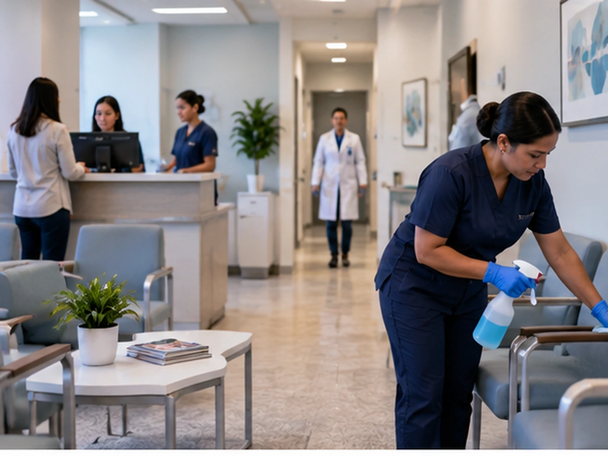

Clean Spaces
Our office is cleaned every night, but with patients coming in and out all day, the waiting room and bathrooms don't stay clean. What can we do during the day?

Why Nightly Cleaning May Not Be Enough
A medical or dental office can look clean when it opens and still need attention again after hours of patient traffic. Restrooms, entrances, waiting areas, trash, and spills can change throughout the day.
Daytime Needs Are Different
The daytime focus is on keeping active, high-traffic areas presentable between the larger scheduled nightly cleanings. That can include restroom checks, trash, spills, entrance cleanup, and waiting-room touchups.
Use Porter Service Alongside the Nightly Crew
A day porter does not have to replace the regular janitorial schedule. The porter handles the cleaning that comes up while the office is open, while the nightly crew completes the broader routine cleaning.
Build the Schedule Around Patient Traffic
The porter schedule can be planned around appointment flow and office operations so the busiest areas receive attention when they need it without disrupting normal use.